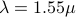
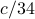

Robust Optimization of Adiabatic Tapers for Coupling to Slow-Light Photonic-Crystal WaveguidesA Oskooi, A. Mutapcic, S. Noda, J. Joannopulos, S. Boyd, and S. Johnson
Optics Express, 20(19):21558–21575, September 2012. We investigate the design of taper structures for coupling to slow-light modes of various photonic-crystal waveguides while taking into account parameter uncertainties inherent in practical fabrication. Our short-length (11 periods) robust tapers designed for m and a slow-light group velocity of  have a total loss less than 20 dB even in the presence of nanometer-scale surface roughness, which outperform the corresponding non-robust designs by an order of magnitude. We discover a posteriori that the robust designs have smooth profiles that can be parameterized by a few-term (intrinsically smooth) sine series which helps the optimization to further boost the performance slightly. We ground these numerical results in an analytical foundation by deriving the scaling relationships between taper length, taper smoothness, and group velocity with the help of an exact equivalence with Fourier analysis. |